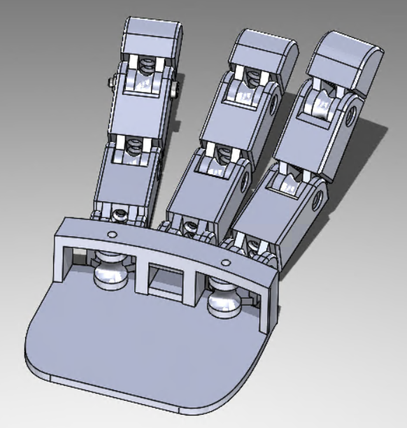
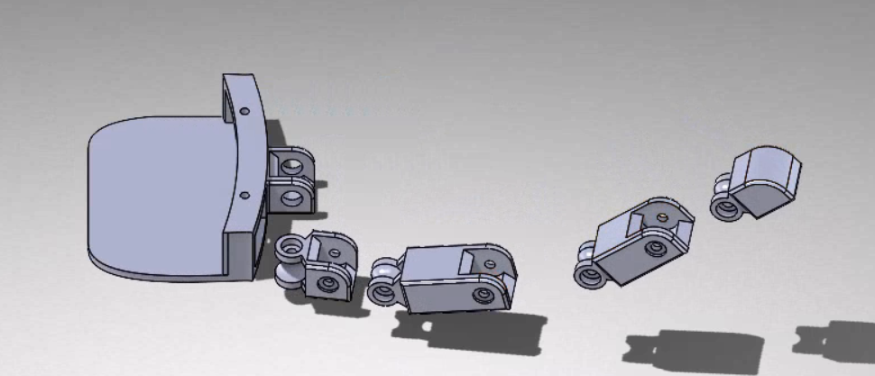

UofT Humanoid Robotics Team
I joined the founding cohort of the University of Toronto Humanoid Robotics Team and contribute to the mechanical design of a humanoid robotic platform. The work applies mechanical design principles, CAD modelling and trade-off analysis to a complex robotic system.
Hand design
I am currently developing and refining 3D CAD models of the humanoid hand, including its mechanical architecture and component integration.
The following pictures show the work I have done so far in designing the fingers and hand of the humanoid.


Actuator selection
I am currently evaluating motor options against torque requirements, size, weight and mechanical constraints.
System-level design
Contributing to overall dimensions, mass distribution and weight optimization to support structural integrity, balance and mobility.